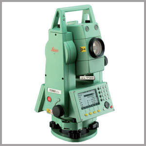

M1- To transform young mind into productive civil engineers using technical knowledge and professional skills through contemporary curriculum and effective learning system with continuous evaluation.
M2- To provide exposure to modern engineering tools and innovative projects to become globally competent civil engineers embedded with ethical values and leadership capabilities.
M3- To serve the people of state and nation by providing a broad and high quality education with co- curricular and extracurricular activities to student for all round development.
Vision Statement:

To build a department of global repute for providing technical ability and professional skills in the field of civil engineering.
Brief Profile of Department:
length="200">
The Civil Engineering Department was started in the year 2010 in CCCT with the approval from Government of Sikkim. There were 43 students in the first year of admission.